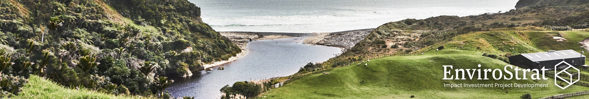
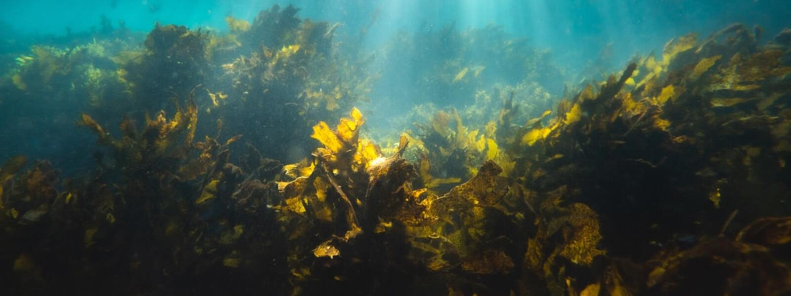
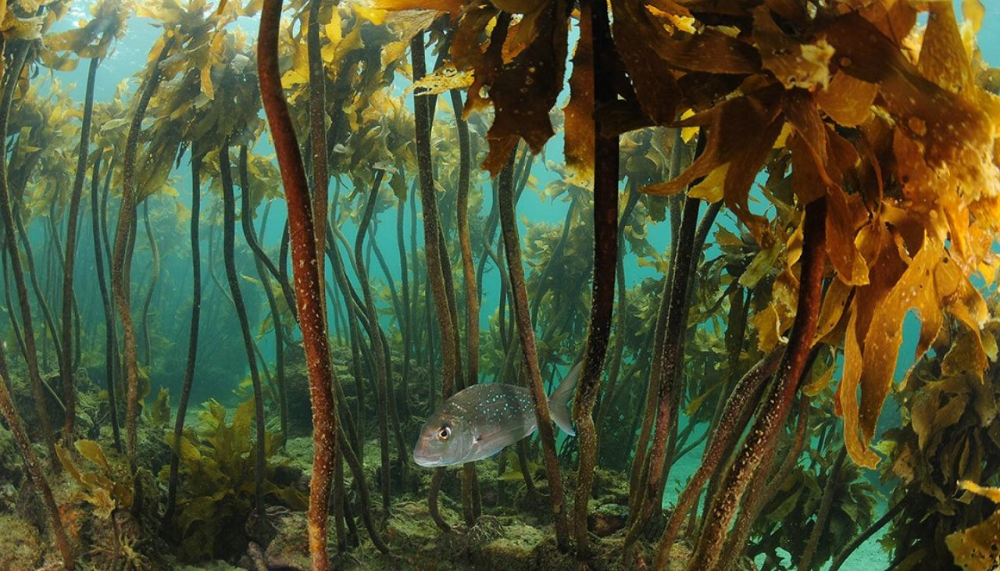

Dr Nigel Bradly is the CEO of EnviroStrat, a natural resource and sustainability advisor, and impact investment project developer. In this edited conversation with Peter Green, Nigel spoke about his journey with EnviroStrat, advice he would give to others in this space and the importance of bridging the gap between investors and sustainable project developers.
About 10 years ago, I created EnviroStrat and started doing advisory work in the natural resources and environmental sectors. I've always liked targeting areas where no-one else operates and, for me, a particularly fascinating area lies at the intersection between economics, finance, and science. As a result, EnviroStrat operates in that arena and our real value comes from our belief that being transdisciplinary is a superpower.

In recent years, EnviroStrat has started to play more of a role in impact investment. This began approximately five years ago, when we developed a green growth strategy for the Waikato region of New Zealand. In order to do this, we had to recognise the need for major investment into certain low-carbon projects. This led us to the world of impact investment, and in time, we decided to bolster our advisory work with this new capability. As a result, our method now involves creating sustainable projects which other parties can invest into. The introduction of this capability created a completely new language and mindset within the team and that's what separates EnviroStrat from other firms. There are very few organisations out there creating projects from scratch like this.
A large driver for me was hearing other people demand that the government fix all environmental problems. Naturally, the government should be held responsible, but a huge part of the answer lies in correctly investing private capital.

The biggest thing I've learned is how distant the world of investing can be from the world of project developers. It is essential that these two players engage as early as possible to understand one another. Unravelling the motivations of each investor is critical and we've managed to really recognise and adapt to this now.
Another thing I've learned is that the investment world wants things that are of decent scale. That's because the effort involved investing half a million dollars is the same as a much bigger investment. It's not worth their time if it's too small. In addition, investors want things that are repeatable, and they want real clarity around risks. This means the project developers need to know how to identify and mitigate these risks.
Overall, if projects are not big enough, nor mature enough in their depth of analysis, you can end up with an impasse. In these situations, the project developers don't get the money and the investors don't get the project. It's a vicious circle.

Our project in partnership with GreenWave is a good case study. In this example we found an idea we liked from the United States, dug deep into the fundamentals, and built a strong investment case and project in collaboration with potential investors. We raised $6.1 million in capital for that, and now execution is the next step. Our seaweed work will very much have blue carbon at its heart, which I'm really excited about. In general, blue carbon is a big opportunity. It might not be the answer for everything, and there is still a lot of work to be done, but it has a big part to play. Interestingly, some of the funding for our GreenWave seaweed project came from a company in the port of Auckland. These guys are looking at seaweed to potentially offset their carbon and improve water quality in close vicinity to their operations.
In New Zealand, many tribes have started to recognise the economic potential of seaweed. Given that there is no functioning sector here yet, we have a great opportunity to create an industry that integrates strong Māori principles, values and business ethics from the outset. We've just started a project to farm seaweed which is working with several tribes and Māori youth.
I would encourage my younger self to be as multidisciplinary as possible. That's because the language from other subjects influences the way you understand things later and that's really important. That notion of being willing to learn completely new things is so critical.
In addition, in this sector of work you've got to be pretty risk tolerant. Understanding risk and having the willingness and ability to take risks is a great skillset. Finally, finding one or two people who can inspire and mentor you in some way can make all the difference. I've been lucky in my career to have two or three examples of that.
I enjoyed Tim Flannery's book "Sunlight and Seaweed", and I'd encourage anyone to read Bren Smith's "Eat Like a Fish"